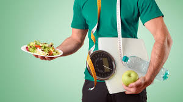

Ejercicios para Perder Peso

Realizar ejercicio físico es fundamental para quemar calorías. Aquí tienes algunas de las mejores opciones:
- Cardio: Ideal para quemar calorías rápidamente. Corre, camina o anda en bicicleta por 30 minutos al día.
- HIIT: Rutinas de alta intensidad intermitente que aceleran el metabolismo.
- Entrenamiento de fuerza: Aumenta la masa muscular para mejorar el metabolismo.
Dietas Efectivas

Una dieta equilibrada es esencial para perder peso rápidamente:
- Dieta Cetogénica (Keto): Rica en grasas saludables y baja en carbohidratos.
- Dieta Baja en Calorías: Consumir entre 1200 y 1500 calorías por día.
- Dieta Detox: Batidos verdes y zumos naturales para eliminar toxinas.
Remedios Caseros
Los remedios naturales pueden ayudar a complementar tu pérdida de peso:
- Té verde: Aumenta el metabolismo y ayuda a quemar grasa.
- Agua con limón: Ayuda a depurar el organismo y mejorar la digestión.
- Vinagre de manzana: Puede reducir el apetito y estabilizar el azúcar en sangre.
Cuidados Generales
Cuida tu cuerpo y mente mientras pierdes peso con estos consejos:
- Hidratación: Bebe al menos 2 litros de agua al día.
- Descanso: Dormir entre 7-8 horas ayuda a la recuperación del cuerpo.
- Manejo del estrés: Practica meditación o yoga para mantenerte en equilibrio emocional.
Ejercicios para Hacer en Casa

Si prefieres entrenar desde casa, aquí tienes algunas ideas de ejercicios efectivos:
- Sentadillas: Perfectas para fortalecer piernas y glúteos.
- Plancha: Excelente para el abdomen y los brazos.
- Flexiones: Fortalece el tren superior sin necesidad de equipo.